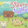
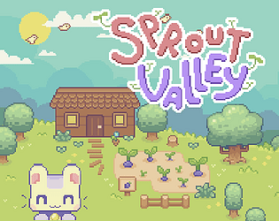

 Sprout Valley
Details
|  | |
| Playtime | Not Played |
| Last Activity | Never |
| Added | 25.10.2024 23:53:13 |
| Modified | 23.11.2024 16:46:43 |
| Completion Status | Not Played |
| Library | Itch.io |
| Source | itch.io |
| Platform | PC (Windows) |
| Release Date | 24.03.2022 |
| Community Score | 69 |
| Critic Score | |
| User Score | |
| Genre | Casual Indie RPG Simulation |
| Developer | ZeFrost |
| Publisher | RedDeer.Games |
| Feature | Achievements Family Sharing Full Controller Support Single Player |
| Links | Steam Itch YouTube Discord Twitch Official |
| Tag | [HLTB] 10 to 20 hours 2D Cute Farming Simulation |
Description
Sprout Valley is a charming farming simulator game where you can step back from the busy life and grow the garden of your dreams. Captivating story, hand-crafted experience.

You play as the main character, cute cat Nico, who tries to find a peaceful place to live in. Nico will find friends along the way and discover interesting events. Help him to learn what secrets Ostara holds.
The goal will be to gather resources and improve your island life. You can grow the plants and harvest the environment for additional resources.

You can sell and buy resources you have gathered. Use your tools to accomplish your goal of living a peaceful life with harmony and nature. Levels are procedurally generated, so there are virtually endless combinations. Each level has a "seed" and in future can be shared with other players to recreate islands and share them across the player base.

There is a dynamic weather system in place to bring some dynamics to the world environment. There will be some additional mechanics that are connected to the weather like the ground getting wet when it rains, etc.
The game has many fantastic events that tie to weather or the daytime.

Key Features
- Turn your overgrown island into a lovely farm! Raise crops, forage fruits, gather resources from nature.
- Craft and furnish your island. Make your island your own, personal hideout.
- Travel to another islands. Sail to other unknown parts of the world. Who knows what adventures await you there!
- Dialogues and cute story. Meet our cute characters and experience the story together.
- Over 15 hours of story mode

I am openly keep my vlog going on several social networks, you are welcome to join and help me build heartwarming and great community!
STEAM | NINTENDO SWITCH | YOUTUBE | TWITTER | DISCORD
FAQ:
Q: How to plant seeds?
A: You need to plow soil first. To do this hit ground with hoe a couple times. Then you will need to open inventory ("I" key) and drag seeds to plowed soil.
Q: How to call emotes menu?
A: Press Y on keyboard or SELECT/SHARE on gamepad.
Q: I found a bug! How do I report it?
A: You can use in-game bug report button or submit it to the feedback form here https://kataclysmal.com/sprout-valley/feedback.html. Alternatively you can contact me by twitter, email on in comments section.